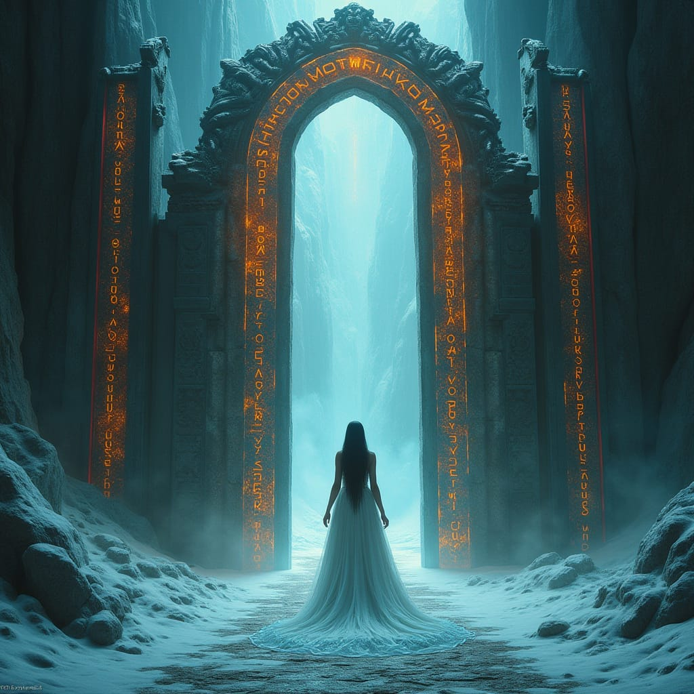

Ты выходишь на улицу. Воздух влажный и холодный, как будто весь мир застыл, ожидая чего-то важного. Ты не знаешь, куда идти, но шаги ведут тебя вперёд. Ты чувствуешь, как будто стоишь на грани — на грани чего-то, что может либо освободить тебя, либо окончательно поглотить. И вот ты оказываешься перед ними — воротами. Они выглядят странно, как что-то между мифом и реальностью. Металлические, они сияют в тусклом свете, будто выполнены из чего-то, что не принадлежит этому миру. Ты понимаешь, что они — не просто проход. Это магия, и ты не знаешь, откуда она здесь взялась. Ты не видишь замка, не видишь ни кнопки, ни рычага. Только странные символы, выжженные на поверхности, которые складываются в вопрос. Магия не ждёт. Она требует решения.
